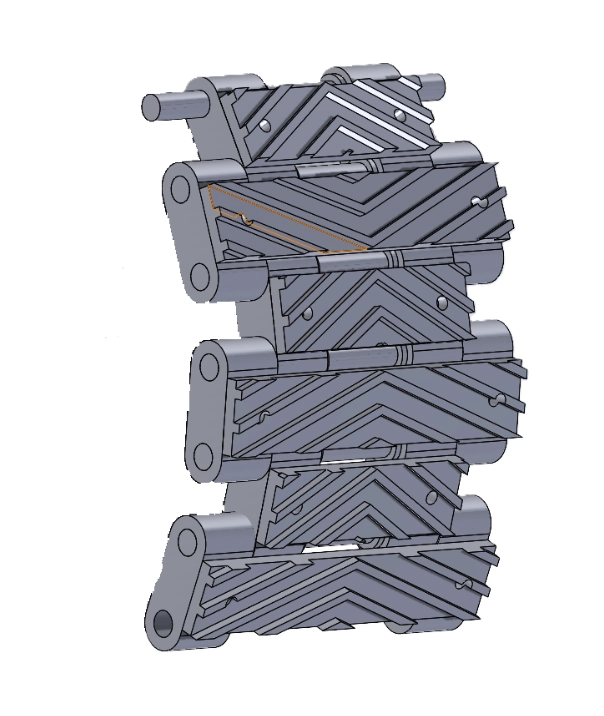

Iterative Design
The rover went through 4 major design iterations, each addressing failures and limitations discovered during testing. The first iteration used a wheeled drivetrain, but testing in loose sand revealed insufficient traction — the wheels would dig in and stall. We pivoted to a tracked drivetrain for all subsequent iterations.
The first track design used 4 individual links joined together with screws and plates. This proved overly complex to assemble and prone to binding. We redesigned the track as a single continuous link per side, significantly simplifying assembly and improving reliability.
The final design features a track contact length of 20 cm, track width of 7.6 cm, and ground clearance of 6 cm — optimized for stability and traction on the sand course.
